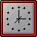
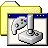
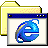
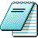
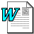
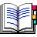

Tools Index
Quick access to every single-file tool in this repo. Each item links to the tool and explains what it does.
Total tools: 13
-
Calories vs Height & Weight
Interactive contour plot that estimates daily calories (BMR/TDEE) from height, weight, age, sex, and activity level. File: calories.html -

Interval Timer
Simple active/rest interval timer with beeps, auto-repeat, and an option to keep the screen awake. File: intervals.html -

Golden Sun Class Explorer
Compare Golden Sun classes by character, Djinn count, class type, stat scaling, and healing availability. File: golden-sun-class-explorer.html -

Kottingbrunn Heurigen Map
Date-aware map and list showing which Kottingbrunn Heurigen are open, with cached geocoding. File: heuriger.html -
Tactical Barbell Operator Planner
6-week wave calculator for squat, bench, and pull-ups with rounding and instant program tables. File: lifting.html -
Mermaid Canvas
Mermaid diagram editor with live rendering plus PNG copy and download at custom scales. File: mermaid.html -

Notepad
Minimal, offline-friendly notepad with markdown-style highlighting, URL hash autosave, and HTML export. File: notepad.html -

Publications Browser
Searchable publications table loaded from BibTeX with filtering, sorting, and download. File: publications.html -
Podcast Episode Search
Search Thomas and Friends Storytime episodes with inline audio playback. File: podcast-search.html -

Canvas Swipe Cards
Swipeable canvas cards for practicing German vocabulary with tap-to-reveal translations. File: swipe.html -
Text Annotator
Slide-ready text highlighter with custom labels, colors, autosave, and a clean screenshot mode. File: text-annotator.html -
Trash Collection Calendar
Full-day trash pickup calendar rendered from a local ICS file with upcoming collection highlights. File: trash.html -
Vim Snake
Retro Snake game with Vim or arrow-key controls, scoring, and speed that ramps up. File: vim-snake.html